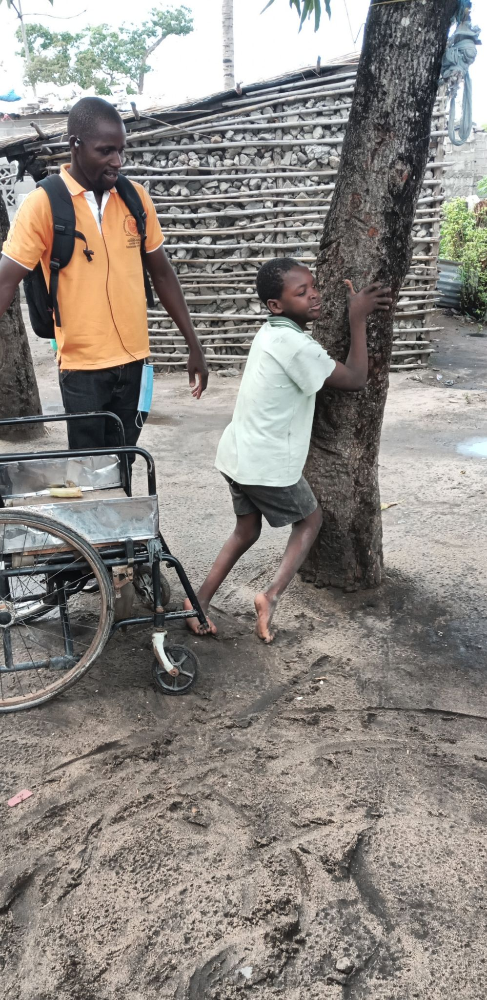
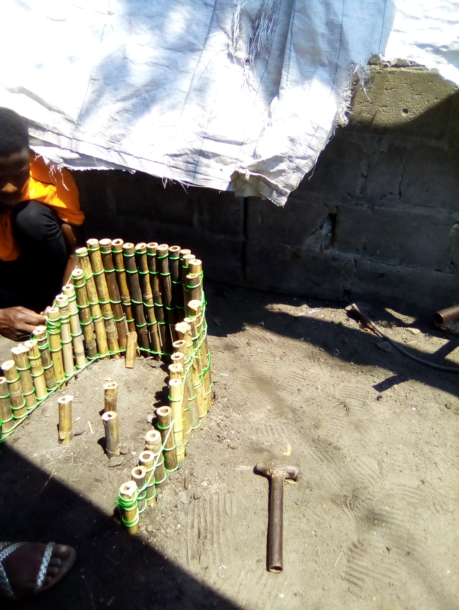

Reabilitar para Incluir e Libertar
Pioneiros em reabilitação humanitária em Moçambique — desde 1990, a ADEMO restaura a mobilidade, a autonomia e a dignidade de pessoas com deficiência em cenários de desastre e no dia-a-dia das comunidades de Sofala.
A ADEMO é pioneira em reabilitação humanitária em cenários de desastres naturais e conflitos em Moçambique.
Trabalhamos com firmeza e dedicação em componentes de reabilitação física e funcional desde a nossa fundação — com uma abordagem integrada que vai muito além da clínica, chegando às comunidades mais remotas e mais afectadas.
reabilitação humanitária

Reabilitação que Transforma Vidas
A reabilitação física e funcional é fundamental para promover a autonomia das pessoas com deficiência. A nossa abordagem integrada visa não apenas restaurar a mobilidade e a capacidade funcional, mas também proporcionar suporte essencial para que cada beneficiário alcance maior independência e qualidade de vida plena.
A reabilitação é essencial para ajudar pessoas com deficiências, doenças ou em processo de recuperação a alcançar e manter a sua capacidade física máxima. Além de prevenir ou retardar a deterioração das habilidades funcionais, a nossa abordagem inclui cirurgia correctiva e reconstrutiva, fisioterapia intensiva e terapia ocupacional — sempre com contribuições técnicas especializadas.
Três Eixos de Intervenção Clínica
A nossa abordagem de reabilitação combina intervenção médica, terapêutica e comunitária — porque a recuperação completa exige actuar em todas as dimensões da vida da pessoa.
Fisioterapia Intensiva e Especializada
O eixo central da nossa reabilitação. Os nossos fisioterapeutas trabalham com planos individualizados de recuperação para cada beneficiário, com foco na recuperação de mobilidade, força muscular, equilíbrio e coordenação. Utilizamos barras paralelas, pesos adaptáveis e equipamentos confeccionados com materiais locais.
📅 Planos IndividualizadosTerapia Ocupacional e Autonomia
A terapia ocupacional concentra-se em devolver à pessoa a capacidade de realizar as actividades do dia-a-dia de forma independente — desde tarefas domésticas a actividades profissionais. Adaptamos o ambiente doméstico e ensinamos técnicas compensatórias que maximizam a funcionalidade com os recursos disponíveis.
🏠 Adaptação FuncionalCirurgia Correctiva e Reconstrutiva
Em parceria com hospitais e equipas cirúrgicas, facilitamos o acesso a cirurgias correctivas e reconstrutivas para casos que requerem intervenção médica avançada — particularmente em pós-trauma de desastre natural. A cirurgia é sempre seguida de fisioterapia de recuperação para garantir resultados duradóuros.
🏥 Parceria HospitalarFerramentas de Liberdade e Mobilidade
Os nossos activistas de reabilitação utilizam uma ampla gama de auxílios técnicos — muitos dos quais são confeccionados com materiais locais — para apoiar as pessoas com deficiência de forma personalizada e sustentável.
Muletas e Canadianas
Muletas axilares e canadianas adaptadas ao tamanho e necessidade de cada utilizador. Muitas são confeccionadas em bambu tratado e madeira local por artisãos da comunidade capacitados pela ADEMO.
🏭 Material LocalCadeiras de Rodas
Cadeiras de rodas manuais e adaptadas para terreno irregular — essenciais em Sofala onde as infraestruturas limitam a mobilidade. Fornecidas e ajustadas individualmente por fisioterapeutas.
👴 Ajuste PersonalizadoPróteses
Próteses de membros inferiores e superiores, produzidas em parceria com centros de ortopedia especializados. O processo inclui avaliação, molde, adaptação e treino de utilização com o nosso fisioterapeuta.
🏥 Treino IncluidoBarras Paralelas
Barras paralelas para treino de marcha e equilíbrio — essenciais na reabilitação pós-cirúrgica e pós-AVC. As nossas barras são fabricadas por carpinteiros e ferreiros locais seguindo especificações clínicas.
🏭 Fabrico LocalCadeiras de Canto
Cadeiras de canto especialmente desenhadas para crianças com paralisia cerebral e outras condições que afectam o controlo postural. Permitem uma postura adequada durante as refeições, brincar e aprender.
🏭 Artesanal · LocalOrtóteses e Talas
Ortóteses para tornozelo, joelho e coluna, e talas para imobilização e posição correcta. Feitas com materiais locais acessíveis — plástico reciclado, couro e espuma — por técnicos de ortopedia formados pela ADEMO.
🏭 Material RecicladoReabilitação em Cenários de Crise
A ADEMO actua como organização de referência em reabilitação humanitária em Moçambique. Quando os desastres naturais destroem comunidades, as pessoas com deficiência são invariavelmente as mais vulnerabilizadas — e as menos contempladas nas respostas de emergência.
A nossa equipa está preparada para actuar em contextos de emergência com brigadas de reabilitação móveis, fornecimento de auxílios técnicos de emergência e apoio psicossocial integrado.

O Nosso Impacto em Números
em Sofala
fornecidos
reabilitação humanitária
de reabilitação formados
com cobertura activa
Como Funciona o Nosso Processo de Reabilitação
Cada processo é único — mas todos seguem uma metodologia rigorosa, centrada na pessoa e baseada em evidência clínica, adaptada à realidade de Sofala.
Avaliação e Diagnóstico
Avaliação clínica completa pelo fisioterapeuta: tipo e grau de deficiência, capacidade funcional actual, objectivos de reabilitação e contexto famíliar e social.
Plano Individual de Reabilitação
Elaboração de um plano de reabilitação personalizado com metas a curto, médio e longo prazo. O plano inclui fisioterapia, terapia ocupacional e, quando necessário, referenciação para cirurgia.
Intervenção Terapêutica
Sessões regulares de fisioterapia e terapia ocupacional, fornecimento e ajuste de auxílios técnicos, e adaptação do ambiente doméstico para máxima autonomia.
Acompanhamento e Reinserção
Acompanhamento contínuo, reavaliação de metas e apoio à reinserção comunitária, escolar ou profissional. A alta clínica é apenas o início da inclusão plena.
A Reabilitação Começa na Mente
A deficiência, o trauma de desastre e a exclusão social deixam marcas profundas na saúde mental das pessoas. A ADEMO reconhece que a reabilitação física sem suporte psicossocial é incompleta — por isso integramos o apoio à saúde mental em todos os nossos programas.

Vozes de quem recuperou a liberdade
Depois do Idai, fiquei sem a perna direita. Achei que nunca mais iria trabalhar. A ADEMO deu-me uma prótese, treinou-me durante meses e ajudou-me a regressar ao campo. Hoje cultivo a minha machamba. A vida voltou.
A minha filha tem paralisia cerebral. As cadeiras de canto da ADEMO, feitas aqui mesmo com madeira local, mudaram a postura dela completamente. Come melhor, sorri mais. É uma transformação que não consigo explicar em palavras.
Como fisioterapeuta formado pela ADEMO, vi o poder de um auxílio técnico feito com materiais locais. Não é a qualidade do material que faz a diferença — é o conhecimento de quem o faz e o cuidado com que é ajustado a cada pessoa.
Reabilitação em Imagens


Cada Pessoa Merece
Recuperar a Sua Liberdade
Com o seu apoio, chegamos a mais comunidades, fornecemos mais auxílios técnicos, formamos mais activistas de reabilitação e garantimos que nenhuma pessoa com deficiência em Sofala seja deixada sem a reabilitação que merece — seja em tempo de paz ou de crise.